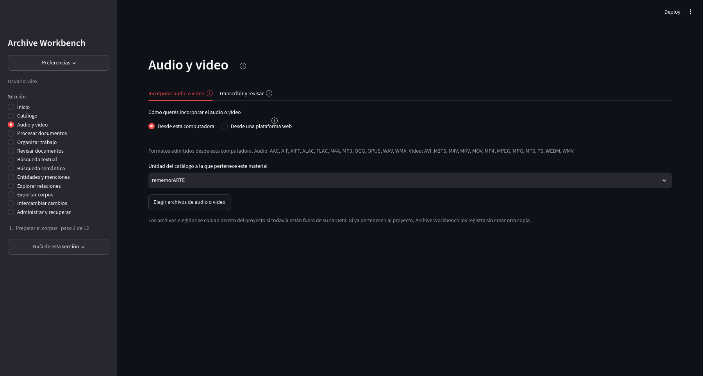
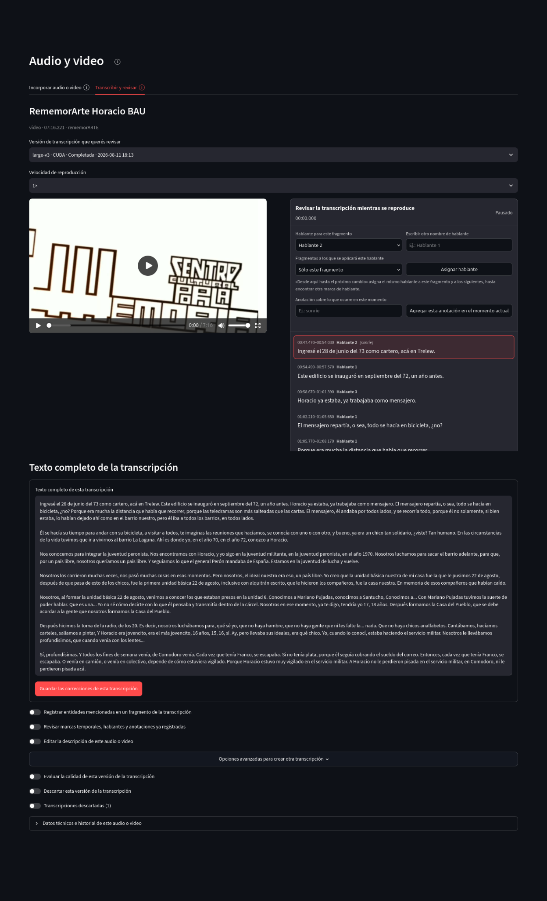

Preparación del corpus
Audio y video
Los archivos de audio y video utilizan el mismo proyecto y catálogo que los documentos digitalizados, pero su revisión se organiza sobre tiempo, segmentos de transcripción, hablantes y anotaciones temporales.
Incorporación de audio y video
La pestaña Incorporar audio o video admite archivos de la computadora y, cuando está instalada la extensión correspondiente, una copia autorizada desde una plataforma web. El material puede vincularse con una unidad del catálogo. La incorporación desde una plataforma conserva la procedencia remota separada de la copia local.
{kind=link}

Abrir captura completa
Transcripción y revisión
Una corrida de transcripción registra el motor utilizado (backend), el modelo, el dispositivo, el idioma y las opciones utilizadas. Los segmentos conservan intervalos temporales y texto. Las correcciones se guardan como revisiones; el texto original de la corrida no se reescribe silenciosamente.
La revisión sincronizada combina reproductor, segmento activo, texto completo, hablantes y anotaciones temporales. Las marcas de hablante o anotación tienen tiempos propios y pueden sobrevivir a una nueva corrida de transcripción.
{kind=link}

Abrir captura completa
Búsqueda y exportación audiovisual
Los segmentos pueden buscarse desde Búsqueda textual y exportarse desde Exportar corpus. En ambos casos el intervalo temporal permanece asociado al texto para poder volver al fragmento correspondiente del audio o video.